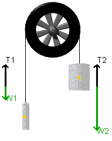

|
|
Play/Pause: Press play to release the masses, press pause () to halt the motion | |
| Reset: Reset restores the masses to their original position and stops the applet. The values that you select for the masses will be retained. | ||
|
Free Body Diagram: Pressing this button toggles on (or off) the Free Body Diagrams for the masses. The images of the masses will fade slightly. You should see something like this when in this mode. Tension vectors appear in black while the weight vectors appear in green.
|
 | |
| View Graph: This button opens the grapher. This is a powerful graphical analysis tool. | ||
Change the masses by sliding the control to either the left or the right. This adjusts mass1. The combined mass of the system (mass 1 plus mass 2) always equals 1 kg, so mass 2 will change in response to mass 1. You can double-click on the control to manually enter a mass value.
| You will note that the pulley weights have yellow dots drawn on them. These represent the center of mass for the weights. |
The potential energy for the masses in the Atwood's pulley system can be set at any value you wish. To do this, position the cursor over the Ep Reference line . The line should fade. This indicates that you have successfully "captured" it. Hold the left-mouse button down and slide the Ep Reference line up or down to a desired location.
Pressing this button opens the data collection dialogue. The normal mode of operation is to have data collection selected. On a slower computer, however, this can make animation appear "choppy". If you wish to improve the appearance of the animation you can deselect this option.